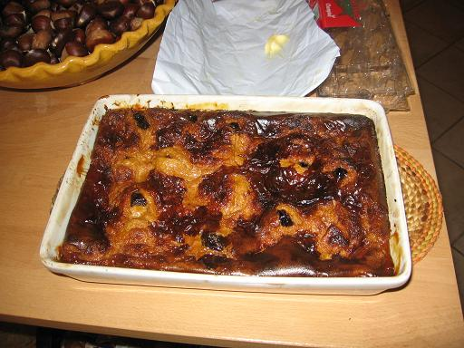

Recette n°104 :
Chti far corse

Ingrédients :
Cette recette est identique à celle de la recette du fars de
Tante Pierrette (cf recette n°7) mais on apporte les modifications
suivantes :
- on ajoute de la chicorée (liquide ou en poudre) au lait, ce
qui permet de donner un caractère "chti" au far
- on utilise des produits corses en ce qui concerne les oeufs et les
puneaux
- pour ne pas que l'aspect breton disparaisse, on remplace la farine de
froment par un mélange 50/50 de farine de blé noir et de
farine de froment.
Préparation :
Comme indiqué ci-dessus, cette recette est identique à
celle de la recette du fars de Tante Pierrette (cf recette n°7)
Observations :
Cette recette a été exécutée le 2 novembre
2006 à Porticcio ; excellente !